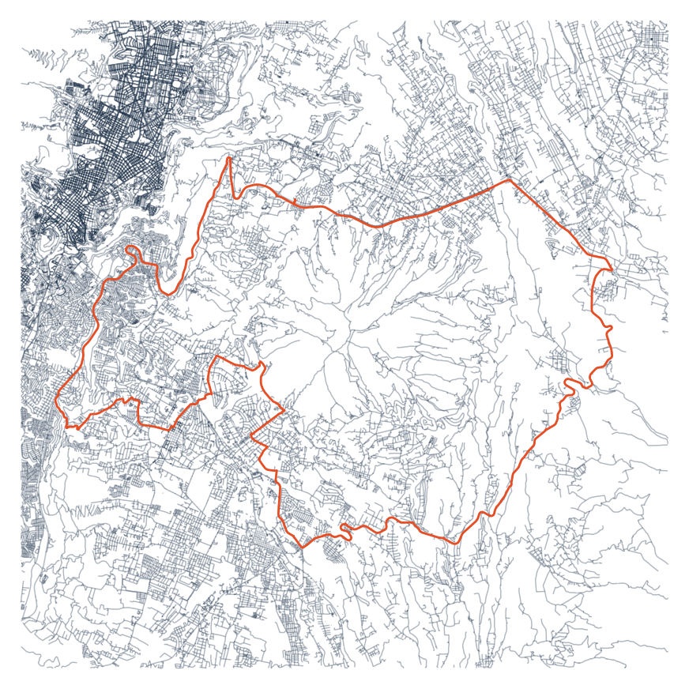
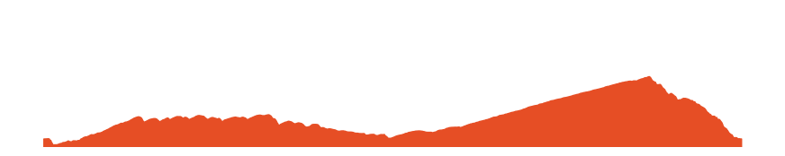

import osmnx as ox
import pandas as pd
import gpxpy
import gpxpy.gpx
import matplotlib.pyplot as plt
import polylineStrava Route Plot using OSMnx involves visualizing and analyzing running or cycling routes recorded with the Strava app on maps generated with the OSMnx library. OSMnx is a Python package that allows users to download, model, and visualize street networks from OpenStreetMap’s data.
1. Read Route
path = "Princesa_Toa_.gpx"
with open(path, 'r') as gpx_file:
gpx = gpxpy.parse(gpx_file)
# extract in gpx file latitude, longitude and elevation
route_info = [{'latitude': point.latitude,'longitude': point.longitude,'elevation': point.elevation}
for track in gpx.tracks
for segment in track.segments
for point in segment.points ]
# route_df Dataframe
route_df = pd.DataFrame(route_info)
route_df.head()| latitude | longitude | elevation | |
|---|---|---|---|
| 0 | -0.216083 | -78.436892 | 2388.8 |
| 1 | -0.216085 | -78.436895 | 2388.8 |
| 2 | -0.216141 | -78.436849 | 2388.9 |
| 3 | -0.216161 | -78.436832 | 2388.9 |
| 4 | -0.216211 | -78.436803 | 2389.0 |
2. Center point for Graph in ox
Link osmnx graph_from_point fuction https://osmnx.readthedocs.io/en/stable/osmnx.html?highlight=graph_from_point#osmnx.graph.graph_from_point
# center point to extract graph latitude , longitude
center_point = (-0.26428048222240524, -78.4202862684383)
G = ox.graph_from_point(center_point, dist=12000, retain_all=True, simplify = False, network_type='all')
#bike all3. Plot Route
fig, ax = ox.plot_graph(G, node_size=0,
figsize = (11, 16),
dpi = 300,
save = False,
bgcolor = "#FFFFFF",
edge_color = "#253951",
edge_alpha = 0.2 ,
show = False)
## Plot activity in graph
plt.plot( route_df['longitude'] , route_df['latitude'] ,
color = "#E64E25" ,
linewidth = 2.0)
## Plot activity in graph
plt.show()
fig.tight_layout(pad=0)
## path name to save
path_save = path.split(".")[0] + ".png"
# fig.savefig( path_save, dpi=300, format="png", bbox_inches='tight',
# facecolor=fig.get_facecolor(), transparent=False)
# save figure
fig.savefig('activity.png')4. Plot Elevation
elevation = route_df.elevation
x_plot = range(len(elevation))
min_elev = min(elevation) - 25# Set the figure size
fig, ax = plt.subplots(figsize=(11, 2))
# Area plot
ax.fill_between(x_plot, elevation, color="#E64E25")
# Set the minimum and maximum values for the y-axis
ax.set_ylim(min_elev, 4000)
plt.axis('off')
# Save the figure
path_save = path.split(".")[0] +"_elevation" ".png"
plt.savefig(path_save , transparent=True, bbox_inches='tight', pad_inches=0 )
# Display the plot
plt.show()
fig.savefig('perfil.png')